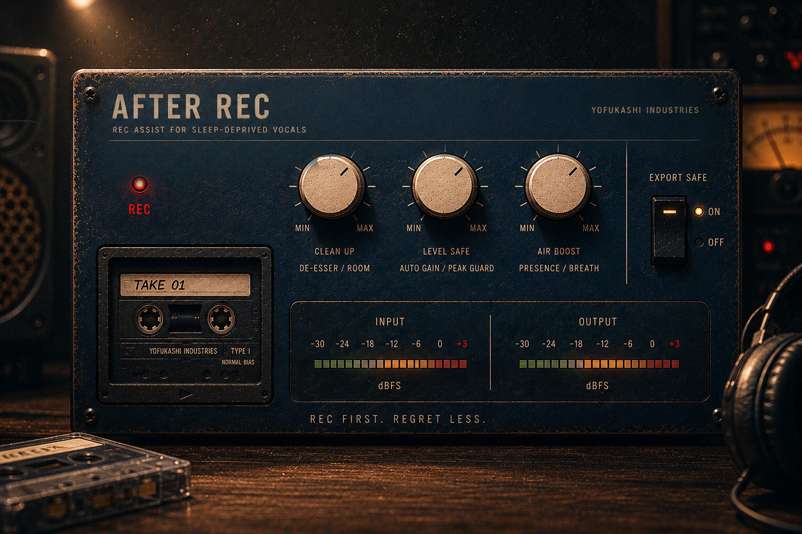
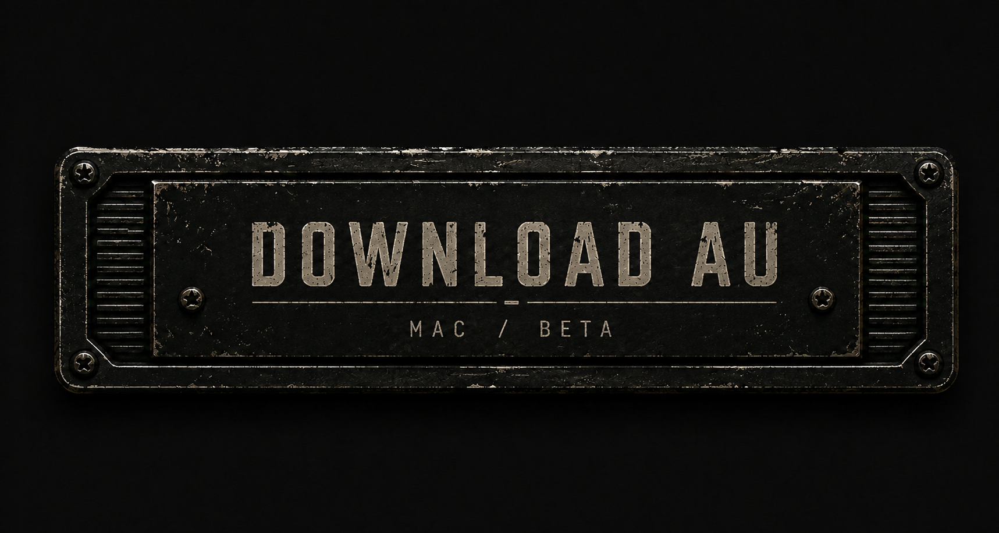

REC assist for sleep-deprived vocals.
宅録ボーカルを、"録りやすく、扱いやすい音"へ整える。
強い音作りではなく、録り音の事故防止と自然な補正のために作られた。

Windows VST3 / v1.0 | Mac AU / Beta
AFTER REC is NOT a mixing plugin.
AFTER REC IS a recording-assist tool.
reduce harshness / reduce room reflections /
reduce cheap direct-interface feeling /
prevent clipping accidents /
create safer vocal recordings for mixing.
「録りの時点で少し安心できる」
「Mixしやすい素材になる」
「なんか録り音が自然に良い」